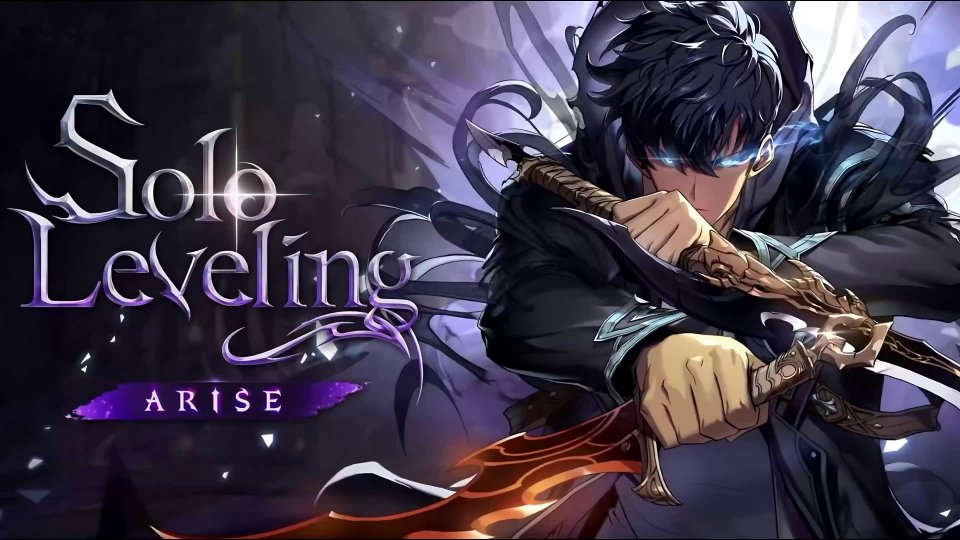
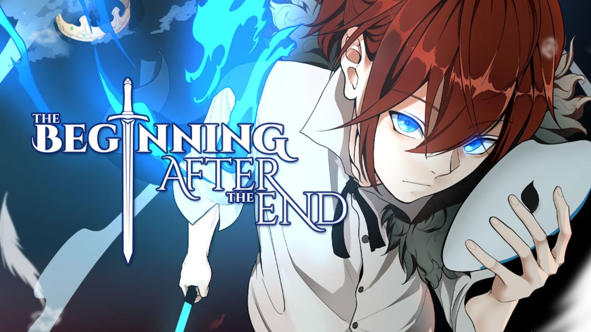
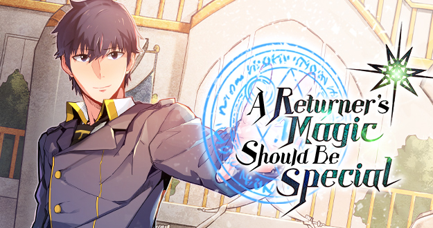
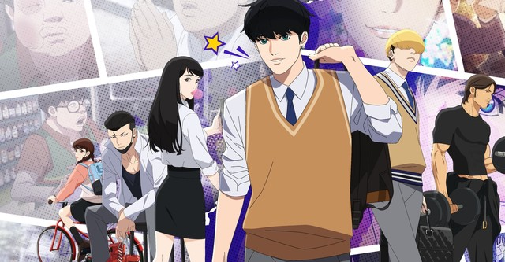
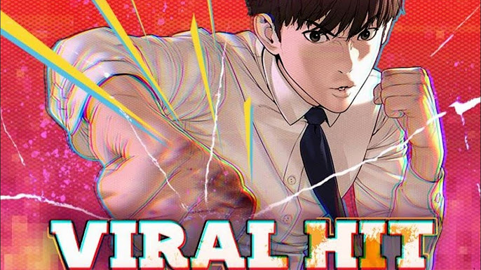
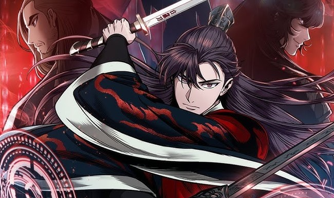
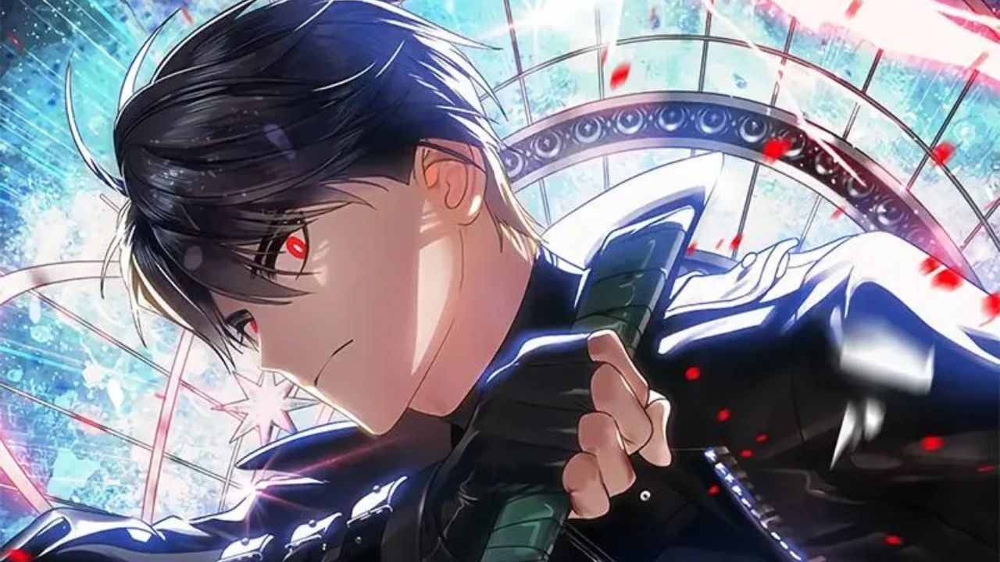
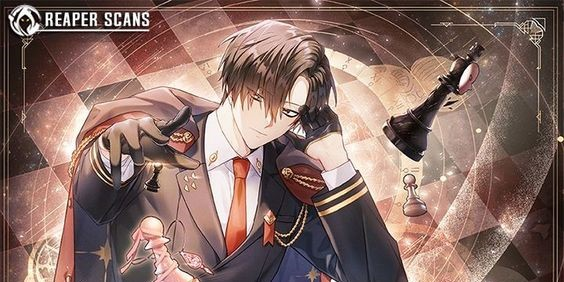
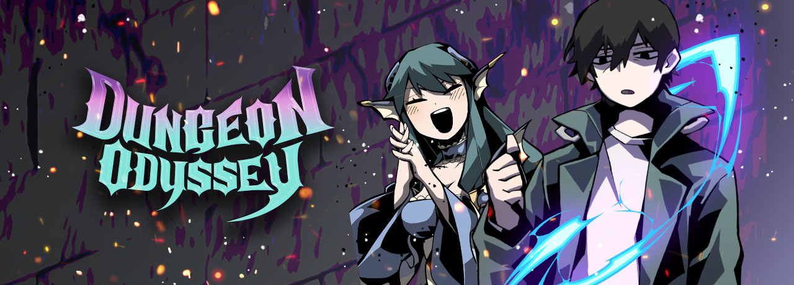

1. Solo Leveling
Solo Leveling (나 혼자만 레벨업, Na Honjaman Lebel-eob) “Solo Leveling Manhwa” or “Solo Leveling Manga” is a Korean webtoon series written by Chu-Gong and illustrated by Gi Si-Ryeong and Jang Su-Rak.“The Gate” arose ten years ago, bridging the gap between the actual world and the domain of magic and monsters. Ordinary humans were given superhuman abilities and were known as “Hunters” in order to confront these heinous animals. Sung Jin-Woo, a twenty-year-old Hunter, is renowned as the “World’s Weakest” due to his pitiful power when compared to even a meager E-Rank. Despite this, he continues to hunt monsters in low-rank Gates to help pay for his mother’s medical expenditures.However, Jin-terrible Woo’s life changes three days later when he awakens in a hospital to find a weird screen floating in front of him, believing himself to be the only one left to die in a mission gone horribly wrong. This “Quest Log” requires Jin-Woo to accomplish an unrealistic and rigorous training regimen.otherwise you’ll be subjected to the appropriate punishment. Jin-Woo is initially hesitant to agree due to the quest’s difficulty, but he soon realizes that it has the potential to turn him into one of the world’s most fearsome Hunters.
2. The Begining After The End
"The Beginning After the End" is a captivating web novel and webtoon series that centers around King Grey, a monarch in a world where martial prowess dictates one's status. Despite his immense strength, wealth, and prestige, Grey is haunted by isolation and a lack of genuine purpose. His life takes an unexpected turn when he is reincarnated into a fantastical world teeming with magic and mythical creatures. In this new life, he becomes Arthur Leywin, a child with extraordinary potential. As Arthur navigates this unfamiliar realm, he grapples with past regrets and seeks to make the most of his second chance. The narrative follows his journey of growth, both in terms of power and personal development, as he encounters friends, foes, and challenges that test his resolve. In this rich and expansive world, Arthur's quest for redemption and meaning is interwoven with intricate plotlines and well-developed characters. The story delves into themes of reincarnation, the pursuit of self-improvement, and the complexities of human relationships. As Arthur strives to harness his abilities and uncover the secrets of his new existence, he must confront not only external threats but also his inner demons. "The Beginning After the End" masterfully blends elements of fantasy, action, and emotional depth, making it a compelling tale of second chances and the enduring quest for a fulfilling life.
3. Omniscient Reader's Viewpoint
"Omniscient Reader's Viewpoint" is an enthralling web novel and manhwa series that centers around Kim Dokja, an ordinary office worker whose only escape is reading a long-running web novel called "Three Ways to Survive the Apocalypse." One day, the novel's story becomes reality, and Kim Dokja finds himself living in the apocalyptic world he knows so well. With his unique knowledge of the plot and characters, he becomes an indispensable player in the fight for survival, using his insights to navigate the challenges and dangers that lie ahead. As Kim Dokja allies with key characters from the novel, he must adapt quickly and make critical decisions to ensure their survival. The narrative is filled with intense battles, strategic maneuvers, and unexpected twists, as Kim Dokja leverages his omniscient reader's perspective to outwit enemies and forge alliances. "Omniscient Reader's Viewpoint" masterfully blends elements of fantasy, action, and meta-narrative, delivering a gripping story about the power of knowledge, the complexity of human relationships, and the struggle to rewrite one's destiny in a world turned upside down.
4. A Returner's Magic Should Be Special
"A Returner's Magic Should Be Special" is a popular web novel and manhwa series that follows the story of Desir Arman, a talented magician who is one of the last surviving members of humanity in a post-apocalyptic world. After fighting tirelessly in a losing battle against the Shadow World, Desir is given a second chance when he is mysteriously sent back in time to thirteen years before the cataclysmic event that decimated humanity. Armed with knowledge of the future and his exceptional magical abilities, Desir sets out to change the course of history and save the world from its doomed fate. Determined to alter the tragic outcomes of his past life, Desir enrolls in the prestigious Hebrion Academy, where he must navigate the challenges of academic life, build strong alliances, and train his comrades to prepare for the looming threat. Along the way, he encounters friends and foes, old and new, and strives to harness the full potential of his magical prowess. "A Returner's Magic Should Be Special" combines elements of time travel, fantasy, and action, presenting a thrilling narrative about redemption, resilience, and the relentless pursuit of a better future.
5. Lookism
"Lookism" is a compelling webtoon series that delves into themes of appearance, social status, and identity. The story centers around Park Hyung Seok, a high school student who is constantly bullied and marginalized due to his unattractive appearance and overweight physique. One day, Hyung Seok wakes up to find that he has been given a new, incredibly handsome and fit body. Mysteriously, he now possesses two bodies: his original one, which remains dormant when he is using his new body, and the new, attractive one that garners admiration and respect. Hyung Seok begins to experience life from two vastly different perspectives, switching between his original self and his new persona. As he navigates the challenges and opportunities that come with his dual existence, he uncovers the harsh realities of society's obsession with looks and the superficial judgments people make based on appearance. "Lookism" explores deep and often uncomfortable questions about self-worth, prejudice, and the true meaning of beauty. The series combines drama, action, and social commentary, offering readers a thought-provoking narrative that challenges conventional views on appearance and identity.
6. Viral Hit
"Viral Hit" (also known as "How to Fight") is an exhilarating webtoon series that follows the story of Hobin Yoo, a high school student who becomes an overnight sensation through his unique fighting videos on social media. Initially, Hobin is a scrawny, bullied kid with no special talents or prospects. However, everything changes when he stumbles upon a mysterious YouTube channel that teaches him unconventional but effective fighting techniques. Determined to rise above his circumstances and gain respect, Hobin begins uploading videos of himself using these techniques to take down bullies and street thugs. As Hobin's channel goes viral, he navigates the chaotic world of fame, facing new enemies and challenges at every turn. The series combines intense action sequences with humor and social commentary, highlighting the impact of social media on modern youth culture. With each fight, Hobin's skills and confidence grow, but so do the stakes, as he must balance his newfound popularity with the dangerous reality of the underground fighting scene. "Viral Hit" is a thrilling tale of resilience, self-discovery, and the unexpected ways in which an underdog can become a hero.
7. Nano Machine
"Nano Machine" is an action-packed webtoon series that follows the story of Cheon Yeo-Woon, a young martial artist from a powerful clan who faces constant danger and political intrigue. Yeo-Woon's life takes a dramatic turn when he receives a visit from his descendant from the future, who injects him with nanomachines—advanced technology that grants him enhanced physical abilities, accelerated healing, and a wealth of knowledge. With his newfound powers, Yeo-Woon embarks on a quest to become the strongest warrior and secure his position within the tumultuous world of martial arts clans. As he trains and hones his skills, he encounters formidable foes, uncovers deep-seated conspiracies, and forms unexpected alliances. The nanomachines not only provide him with extraordinary capabilities but also guide him with strategic insights and historical knowledge, giving him an edge over his adversaries. "Nano Machine" masterfully blends elements of science fiction and traditional martial arts, creating a thrilling narrative filled with intense battles, political maneuvering, and personal growth. Yeo-Woon's journey is one of perseverance and transformation, as he strives to protect his clan and uncover the secrets of his mysterious benefactor from the future. The series offers readers a captivating blend of futuristic technology and classic martial arts drama, making it a unique and engaging story.
8. Sss-class suicide hunter
"SSS-Class Suicide Hunter" is an intriguing web novel and manhwa series that combines elements of dark fantasy and action. The story revolves around a character named Jin Ryu, who finds himself in a world where dungeons and monsters are a common reality. However, Jin Ryu is far from a typical hero. Despite his desperate efforts to become powerful and escape his dire circumstances, he constantly fails and ends up in seemingly hopeless situations. His life takes a drastic turn when he acquires a unique ability: the power to "reset" his life every time he dies. This means that with each death, he gains new insights and experiences, gradually increasing his strength and knowledge. Armed with this unusual power, Jin Ryu embarks on a perilous journey to overcome powerful foes, unravel mysteries, and challenge the very fabric of the world he inhabits. "SSS-Class Suicide Hunter" offers a blend of intense action, dark humor, and a deep exploration of character development. The protagonist's repeated failures and eventual growth provide a compelling narrative about resilience, strategic thinking, and the relentless pursuit of redemption. As Jin Ryu navigates his unique path, readers are treated to a thrilling and unpredictable adventure filled with surprises and high-stakes battles.
9. Regressor Instruction Manual
"Regressor Instruction Manual" is a captivating web novel and manhwa series that follows the story of Hae-Jin, a character who, after experiencing a series of catastrophic events, finds himself sent back in time. Given the chance to redo his life from a crucial turning point, Hae-Jin discovers that he now has access to an unusual "instruction manual" that provides guidance and strategies to navigate his new reality and avoid the mistakes of his past. Equipped with this manual, Hae-Jin embarks on a journey to change his fate, leveraging his knowledge of future events and hidden truths. The series combines elements of time travel, strategy, and personal growth as Hae-Jin uses his newfound wisdom to tackle challenges, build alliances, and confront powerful adversaries. "Regressor Instruction Manual" offers a thrilling narrative filled with intricate plot twists and a deep exploration of the consequences of altering one's past, making it an engaging read for fans of the genre.
10. Dungeon Odyssey
"Dungeon Odyssey" is an engaging web novel and manhwa series that immerses readers in a world of dungeons, monsters, and adventure. The story follows the protagonist, who, after a series of unforeseen events, becomes an explorer in a vast and dangerous dungeon realm. This realm is filled with treacherous monsters, intricate traps, and valuable treasures that test the limits of his skills and courage. As the protagonist delves deeper into the dungeon, he uncovers hidden secrets, forms alliances with other explorers, and faces off against powerful foes. The series blends action, strategy, and exploration, highlighting the challenges and excitement of navigating a perilous and ever-changing environment. "Dungeon Odyssey" captivates with its dynamic world-building, intense battles, and the protagonist’s relentless quest for survival and discovery.